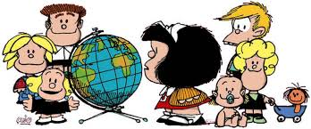

Mafalda
"La vida es linda, lo malo es que muchos confunden linda con fácil."

Mafalda es una tira de prensa argentina creada por el humorista gráfico Quino de 1964 a 1973, protagonizada por la niña homónima, «espejo de la clase media argentina y de la juventud progresista», que se muestra preocupada por la humanidad y la paz mundial y se rebela contra el mundo legado por sus mayores.
- Mafalda:
- Es la protagonista de la tira, representa la aspiración idealista y utópica de hacer de este un mundo mejor, aunque la envuelven el pesimismo y la preocupación debido a las circunstancias sociopolíticas que aquejan permanentemente al planeta.
- Habría nacido el 15 de marzo de 1960 o el 15 de marzo de 1962 en el seno de una típica familia de clase media argentina de los años sesenta.
- Entusiasta de Los Beatles, el Pájaro Loco y los panqueques, detesta en cambio la sopa
- Familia:
- Padre: la tira no revela su nombre y apellido. Característico empleado de oficina, trabaja como corredor en una compañía de seguros. Procura en todo momento la mesura en el gasto familiar y no comprende bien los avances y retos que plantean las nuevas generaciones. Las dudas que le plantea su hija con respecto a los males del mundo lo ponen en entredicho en más de una ocasión. Su afición es el cultivo de plantas de interior, ya que la familia vive en un apartamento. Conduce el auto familiar, que es un Citroën 2CV.
- Raquel (madre): es una típica ama de casa argentina de clase media de los años sesenta, ocupada de lo que ocurre en su microclima hogareño. Cocina, lava, plancha y hace las compras, pero aparentemente no maneja el auto. Inició estudios universitarios y estudió para ser pianista profesional, pero abandonó su carrera luego de haberse casado, hecho que Mafalda le recrimina en varias ocasiones. Sin embargo, no requiere complicaciones para ser feliz y da lecciones de humildad y sacrificio a su pequeña hija inquieta por las adversidades del mundo.
- Guille: es el hermano pequeño de Mafalda y el único personaje que crece físicamente a lo largo de la tira. Guille protagoniza de continuo las travesuras domésticas propias de los niños de primera infancia. A pesar de su inocencia le gusta Brigitte Bardot, tiende a ser algo irreverente (llama a sus padres «los viejos») y le encanta la sopa, lo que suele provocar la ira y el asco de su hermana. Inicialmente, Guille se expresa con defectos de pronunciación y usa chupete, pero más tarde abandona ambos.
- Amigos:
- Felipe: va un curso más arriba que ella en la escuela primaria y sin embargo su personalidad es más simple e ingenua. Perezoso, soñador, tímido y despistado, vive agobiado por sus tareas escolares. Tiende a angustiarse sobremanera cada vez que se terminan las vacaciones y están por comenzar las clases. Ve la vida de manera más sencilla que Mafalda y de forma más acorde a su edad. Le gusta leer historietas de El Llanero Solitario, escuchar a Los Beatles y jugar al ajedrez. Muestra interés por una chica llamada Muriel, quien no parece percatarse de su existencia, y cada vez que intenta hablar con ella, no se atreve. Vive en el mismo edificio que Mafalda y su familia.
- Manuel "Manolito" Goreiro: hijo de un comerciante de barrio y propietario del almacén «Don Manolo», Manolito representa las ideas capitalistas y conservadoras dentro de la historieta, además de constituir una caricatura del inmigrante gallego. Es tosco, ambicioso y materialista, pero no malintencionado; mostrando frecuentemente en la tira rasgos de sagacidad mental a la hora de criticar situaciones o actitudes que le desagradan. Además de acudir a la escuela —cuestión para él secundaria—, ayuda a la venta y distribución de mercancías en el almacén de su padre y le interesa estar al tanto de todas las operaciones de entrada y salida de dinero de la tienda, al grado de que hasta sueña con el hecho de que los precios suben y suben. A diferencia del resto de los personajes, a Manolito le gusta la sopa y desprecia a Los Beatles y a las tendencias juveniles de los años sesenta; también es antagónico hacia los otros almacenes, competidores de «Don Manolo». Parece carecer de fantasía e imaginación, aunque demuestra un gran oportunismo comercial (vende a sus amigos dulces a crédito con intereses, inventa maneras de publicitar el almacén de su padre y hasta huele una moneda a distancia). Su mayor aspiración es convertirse en un importante ejecutivo dueño de una cadena de supermercados y enviar a Rockefeller a la quiebra.
- Susana "Susanita" Clotilde Chirusi: parlanchina, pendenciera, chismosa —nada de lo que pasa en su vecindario ocurre sin que ella se entere— y en ocasiones altanera, Susanita puede llegar a ser agobiante para el resto del grupo, aunque ella no lo percibe. Además es racista, despectiva de los pobres, admiradora de la oligarquía y más preocupada por la imagen y la moda que el resto de sus amigos. Parece ser de clase alta y no duda en presumirlo cuando dice que su padre gana más que los padres de sus amigos, a pesar de no saber cuánto ganan. Sus pasatiempos favoritos son jugar con Mafalda a representar situaciones sociales propias de los mayores (juego de la mamá, juego de tomar el té), así como discutir con Manolito, a quien desprecia por rústico e ignorante. Es enamoradiza y muestra interés romántico por Felipe, quien no le corresponde. Es también egoísta y rencorosa, pero valora la gran amistad que la une a Mafalda. Su máxima aspiración es casarse, ser una madre de clase social acomodada y tener muchos hijos, asumiendo el rol tradicionalmente asociado a la mujer. Contrasta fuertemente con la actitud de Mafalda, más intelectual y concientizada de la liberación de la mujer y de la igualdad entre los sexos.
- Miguel "Miguelito" Pitti: es un año menor que Mafalda. Es más soñador que Felipe y acostumbra hacerse preguntas complejas y absurdas sobre la realidad. Es también más inocente que el resto de la pandilla de amigos, y pasa de etéreas reflexiones («¿Cómo hará el tiempo para doblar las esquinas en los relojes cuadrados?») a típicas quejas de niño («¡Siempre yo, siempre yo!... ¿no puede ir otro a hacer los mandados?»). Hijo único, suele discutir con su madre —aparentemente estricta— sobre sus deberes infantiles. Es algo egoísta y un enfervorizado defensor de Benito Mussolini, entusiasmo que le fue inculcado por su abuelo. Es directo y sincero con las personas, pudiendo llegar a parecer cruel en algunos momentos, pero aceptando con humildad y sin acritud las críticas recibidas.
- Libertad: es muy bajita de estatura, al punto de que Guille es más alto que ella, lo cual es motivo de comentarios recurrentes de los demás personajes, en un obvio guiño político. Su personalidad es incendiaria y proyecta abiertamente ideas políticas en contra del sistema establecido. Es el único personaje más liberal que Mafalda, contrastando con los más conservadores Manolito y Susanita. También es el personaje que más conversa con Mafalda sobre temas sociopolíticos, y ambas parecen concordar ideológicamente, salvo por el hecho de que Mafalda es más realista. El padre de Libertad es socialista y tiene un empleo al que no valora (un «puestucho de morondanga», como refiere Libertad) y su madre es traductora de francés. Libertad aspira a que el pueblo tome conciencia de la situación de su país, se levante en una revolución social y cambie las estructuras de la nación. Dice gustar de las personas y cosas simples, pero al tratar de explicarlo, cae en una retórica muy confusa. Pretende convertirse en traductora de francés como su madre.
- Otros personajes:
- Don Manolo (padre de Manolito): inmigrante gallego, nacido en España y trasladado a América. Tosco en su modo de ser y en su aspecto. Es el dueño del almacén «Don Manolo». Nunca se toma vacaciones y parece profesar los mismos intereses monetarios que Manolito.
- La madre de Susanita: mujer parecida en aspecto a Susanita, aunque un tanto obesa. Ama de casa y chismosa como su hija, vive en un apartamento decorado de manera kitsch.
- La madre de Felipe: hay dos versiones de este personaje. En la revista Primera Plana (1965), apareció como una mujer con cabello rizado, sin los dientes característicos de Felipe, usando una máquina de coser. A partir de 1966 aparece en la tira con el pelo lacio y los dientes delanteros protuberantes, como su hijo.
- La madre de Miguelito: mujer obsesiva con la limpieza de su hogar y aparentemente autoritaria. Usualmente solo participa recriminando cosas a Miguelito o dándole órdenes, sin que se la vea. Aparece en un solo cuadro donde se la ve de lejos y malhumorada.
- Tía Paca: tía abuela de Mafalda y tía de Raquel. Suele saludar a Mafalda con muchos besos, cosa que a ella no le agrada.
- La madre de Manolito: nacida en España, como el padre de Manolito. Nunca se le ve el rostro, solo aparece su brazo cuando amenaza a Manolito con una alpargata para que vaya a la escuela.
- El padre de Susanita: hombre de bigotes, vendedor de una fábrica de embutidos.
- Muriel: chica guapa de la que Felipe está enamorado, pero que, al parecer, no parece notar su existencia.
- Burocracia: tortuga mascota de Mafalda y Guille, llamada así por su lentitud. Al igual que Mafalda, detesta la sopa.
- La madre de Libertad: mujer aparentemente muy joven, delgada, pecosa, de cabello lacio y alta, a diferencia de su hija. Es traductora de libros en francés, especialmente de autores existencialistas como Jean-Paul Sartre. No quiere que Libertad trabaje de traductora de francés porque no lo considera un oficio rentable. Vive con su esposo e hija en un pequeñísimo apartamento. Se la ve fumar.